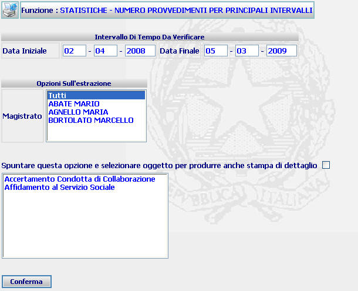

GENERALITA'
MOVIMENTO PROVVEDIMENTI DISTINTI PER PRINCIPALI INTERVALLO - INSERIMENTO OPZIONI DI ESTRAZIONE:
La funzione consente di inserire le opzioni di estrazione del movimento
procedimenti per principali intervalli.
LE MASCHERE VIDEO
La
funzione viene realizzata attraverso la maschera seguente

COME FARE PER ...
Per impostare le opzioni di estrazione dei procedimenti
per
principali intervalli,
l'utente deve:
|
Data iniziale - Data finale |
Campo (obbligatorio) attraverso il quale si inserisce
l'intervallo temporale al quale si vuole limitare la ricerca. |
|
Tipo di estrazione |
Campo (obbligatorio) attraverso il quale viene indicata la modalità di
estrazione (per singoli oggetti o per gruppi omogenei di oggetti) che si
vuole ottenere. |
|
Magistrato |
Campo (obbligatorio) attraverso il quale è possibile indicare, tramite l'apposita
tendina, il Magistrato al quale si vuole limitare la ricerca. Nel caso,
invece, in cui si voglia ottenere una ricerca estesa a tutti i
Magistrati dell'ufficio, occorre selezionare la voce "Tutti". |
|
Oggetti |
Campo attraverso il quale è possibile indicare l'oggetto relativamente
al quale si vuole ottenere la stampa di dettaglio del movimento dei
procedimenti. Per ottenere detta stampa è necessario, altresì, spuntare
l'opzione di produzione stampa di dettaglio tramite l'apposito check box |